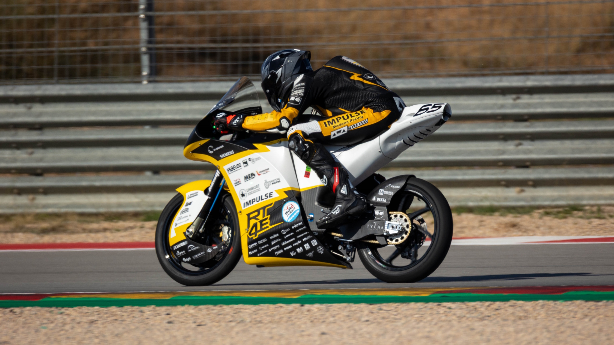

12/2025
11/2024
11/2024

Track, Suspension & Handling Validation
Telemetry-based modeling of track, suspension, and handling dynamics to support setup decisions and performance analysis.
Mechanical Engineer specialized in Automotive Engineering, focusing on vehicle dynamics, multibody simulation and control. I build and validate physics-based models to understand and improve the behaviour of complex dynamic systems.
Telemetry-based modeling of track, suspension, and handling dynamics to support setup decisions and performance analysis.
Modeling, simulating, and integrating a motorcycle steering damper to evaluate stability, packaging constraints, and on-track performance.
Development and validation of a motorcycle VI-Grade model using track data to assess handling and performance across setups and conditions.
Dynamic modeling and simulation of a complete MotoGP holeshot hydraulic system, from geometry to performance evaluation under launch and braking loads.
📧 Email: nicolasromanella1@gmail.com
🔗 LinkedIn: linkedin.com/in/nicolas-romanella
📄 Resume: Download PDF